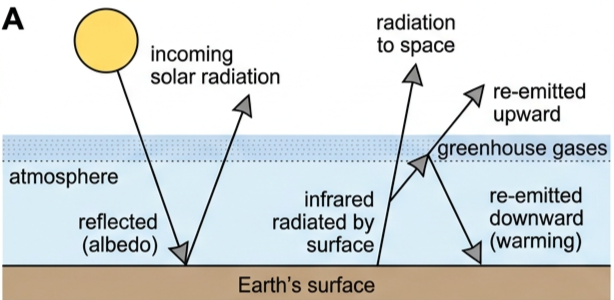
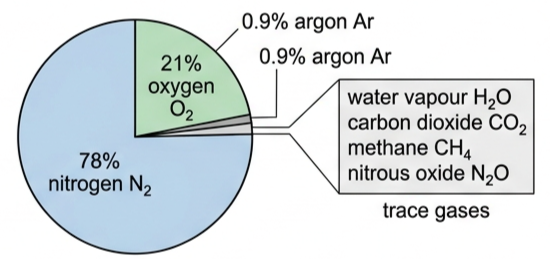
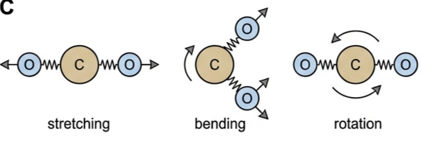
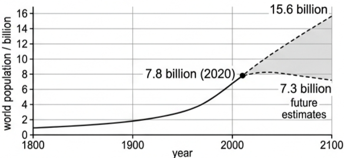
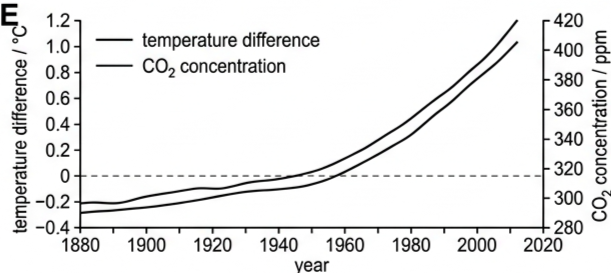
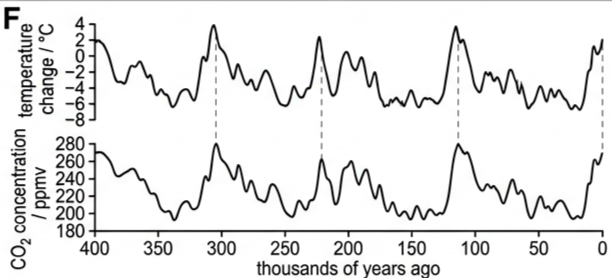
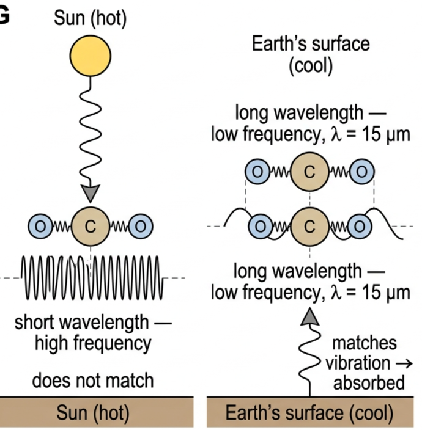
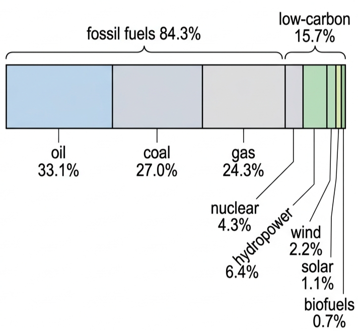

🌡️ Hook – why the Earth needs greenhouse gases at all
The Earth's surface constantly radiates energy away as infrared, just like a very cool light bulb. If nothing were in the way, all of it would escape straight into space and the average surface temperature would sit far below freezing. Figure 1 shows what actually happens: as that outgoing infrared passes up through the atmosphere, greenhouse gases absorb some of it and re-emit it in every direction — including back down. That returned energy is why the Earth's real average surface temperature is close to 15 °C, not -18 °C.

🧪 Which gases, and why
The Earth's atmosphere formed over millions of years from volcanic and biological processes and collisions with comets and asteroids. By volume it is approximately 78% nitrogen, 21% oxygen and 0.9% argon, with naturally occurring traces of many other gases, including carbon dioxide and water vapour.
Of the trace gases, four matter most. In decreasing order of their contribution to the greenhouse effect:
- water vapour, H₂O
- carbon dioxide, CO₂
- methane, CH₄
- nitrous oxide (dinitrogen monoxide), N₂O
Nitrogen, oxygen and argon have no greenhouse effect, because they have non-polar molecules or atoms. Each of the four greenhouse gases has both natural and human-activity origins.
The relative importance of a gas depends on both its abundance in the atmosphere and its ability to absorb infrared radiation. Carbon dioxide contributes most to the overall greenhouse effect — not because it is the strongest absorber, but because it is far more abundant than the alternatives. Methane and nitrous oxide absorb infrared radiation more strongly than carbon dioxide, molecule for molecule, but their atmospheric concentrations are much lower.

🎯 The resonance mechanism: how a molecule absorbs infrared
Molecules of greenhouse gases absorb infrared radiation because the atoms within them are never at rest — they vibrate at high frequencies, oscillating with simple harmonic motion, like masses connected by springs. Figure 3 shows some of the ways a carbon dioxide molecule can vibrate: stretching along its molecular axis, bending in perpendicular directions, and rotating.

If the atoms in a molecule vibrate at the same frequency as the infrared radiation passing through, energy can be absorbed — an example of resonance — raising the molecule to a higher energy level. The energy is quickly released again as the molecule falls back to its lower energy level, but it is radiated away in random directions: roughly half heads back down towards the surface, keeping it warmer than it would be without the greenhouse gases.
Most radiation from the Sun is at higher frequencies, so it is much less likely to be absorbed. Radiation emitted from the Earth's cooler surface is mostly at lower frequencies — closer to the natural vibration frequencies of greenhouse gas molecules — so it is absorbed far more readily.
🔥 Enhanced greenhouse effect: human activity turns up the effect
The Earth's population passed eight billion towards the end of 2022, having quadrupled in under a century (Fig 4). Feeding, housing, cooling, heating and transporting that many people all involve transfers of energy — and for the last 300 years, most of that energy has come from burning fossil fuels.

The benefits of fossil fuels to society — electricity generation, transport — are undeniable. But burning them releases increased amounts of greenhouse gases, principally carbon dioxide, into the atmosphere. More greenhouse gas means more of the thermal energy radiated from the Earth's surface is absorbed in the atmosphere and re-radiated back down, raising the surface's average temperature further.
It is currently believed that the enhanced greenhouse effect has raised the Earth's average surface temperature by just over 1 °C during the last 60 years, with further rises considered inevitable. The burning of fossil fuels is almost certainly the greatest cause of the enhanced greenhouse effect, and nearly all scientists agree with this and its consequence — global warming — although some of the public and some politicians remain less easy to convince.
📈 Reading the correlation: CO₂ and temperature
| Graph type | Axes (X, Y) | Shape | What to read |
|---|---|---|---|
| CO₂ vs temperature, 1880–2020 | Year · CO₂ / ppm (right axis) and temperature difference / °C (left axis) | Both curves rise steadily, especially after 1950 | CO₂ rises from ~300 ppm to over 400 ppm as temperature difference rises from below 0 to about 1.2 °C — a clear correlation over a short timescale |
| CO₂ vs temperature, ~400,000 years | Thousands of years ago · CO₂ / ppmv and temperature change / °C | Two stacked wave-like curves whose peaks and troughs align | CO₂ (180–280 ppmv) and temperature (-8 to +4 °C) have tracked each other for hundreds of thousands of years, long before humans burned fossil fuels in quantity |


✍️ Worked example – which radiation does CO₂ actually absorb?
One natural frequency of vibration of a carbon dioxide molecule is \(2.0 \times 10^{13}\) Hz. (a) Determine the wavelength of thermal radiation this molecule will absorb. (b) Explain why carbon dioxide can absorb radiation from the Earth but not from the Sun.
\(\lambda = \dfrac{c}{f}\)
\(= \dfrac{3.0\times10^{8}}{2.0\times10^{13}}\)
(b): the Earth's surface is cool, so it emits mostly lower-frequency (longer-wavelength) infrared close to this value, which resonates with the CO₂ molecule. The Sun is much hotter and emits mostly higher-frequency, shorter-wavelength radiation, which does not match this vibration frequency and so is not absorbed.

🌍 Real world: consequences, solutions, and the energy mix
The enhanced greenhouse effect's consequences are interconnected and expected to worsen, though some places (and richer countries) will cope better than others: increasing temperatures of oceans, land and atmosphere; climate change and melting snow/ice; more frequent extreme weather (storms, floods, drought, fires); and rising sea levels with increased ocean acidity.
Fig 8 shows the world's 2020 energy mix: fossil fuels supply 84.3% (oil 33.1%, coal 27.0%, gas 24.3%); low-carbon sources supply 15.7% (nuclear 4.3%, hydropower 6.4%, wind 2.2%, solar 1.1%, biofuels 0.7%, other renewables 0.9%) — renewables total 11.4%, up from 13.9% non-fossil in 2000. Over the last 20 years fossil fuels have supplied about 85% of the world's growing energy needs; we now burn about 50% more fossil fuels than in 2000, and wind plus solar still meet under 4% of global demand.

Individuals and governments have a wide range of possible actions: supporting governments who take prompt action (more renewables, discouraging energy-intensive activity, funding R&D such as carbon capture); accepting higher taxation to discourage fossil fuel use; installing home renewables such as solar panels; using energy-efficient devices less often; improving home insulation; adjusting heating/cooling thermostats; wasting less (especially food); reusing rather than replacing; reducing methane emissions; eating less meat; cheaper and more plentiful public transport; supporting climate-positive businesses; using electric, smaller, fewer and less powerful vehicles; limiting travel (especially for pleasure); recycling; changing lifestyles and expectations; and reforestation.
🚀 HL extension: correlation, causation, and climate models
The kinetic theory of gases models small amounts of gas in closed containers well. The Earth's atmosphere is a far larger, more complex gaseous system: meteorologists can forecast weather about 10 days ahead with reasonable accuracy, but predicting an entire planet's climate for decades is a much harder problem. Climate models are improving as data, processing power and international collaboration all increase.
When two data sets correlate as closely as CO₂ and temperature do (Figs 5 and 6), it's tempting to assume the first caused the second. Four possibilities actually need ruling out: A caused B; B caused A; both are caused by some third factor C; or the correlation is coincidence with no real explanation.
Challenge: what additional evidence, beyond the correlation itself, has convinced almost all scientists that rising CO₂ causes rising temperature rather than the reverse? Answer: a physical absorption mechanism (resonance) that predicts warming from added CO₂ independently of the historical data, plus consistency across many independent methods and datasets, which rules out coincidence and makes reverse causation implausible — since the recent CO₂ rise is known to originate from fossil fuel combustion, not from a warming ocean releasing it.
⚠️ Trap corner – common mistakes
| Misconception | Correct view |
|---|---|
| The basic greenhouse effect itself is causing rising temperatures | The natural greenhouse effect keeps Earth's surface near a stable 15 °C and is essential for life. It's the enhanced (human-driven) greenhouse effect that is changing global temperatures |
| CO₂ must be the strongest greenhouse gas, since it dominates the effect | CH₄ and N₂O absorb infrared more strongly per molecule than CO₂. CO₂ dominates overall only because it is far more abundant |
| Nitrogen and oxygen, the main atmospheric gases, must contribute to the greenhouse effect too | N₂, O₂ and Ar are non-polar and absorb no infrared radiation at all — they have zero greenhouse effect |
| A strong correlation between CO₂ and temperature proves CO₂ causes warming | Correlation alone never proves causation — it could run the other way, share a common cause, or be coincidence. Certainty also requires the resonance absorption mechanism |
Complete the statements:
✓ Equivalently: energy absorbed per second = energy emitted/lost per second.
✓ The absorbed energy is re-emitted in random directions rather than continuing outward, so the measured outgoing intensity at those specific wavelengths is reduced.
✓ (b) The Sun's radiation is mostly at much higher frequencies, which don't match this vibration frequency.
✓ The cooler Earth's surface emits mostly at lower frequencies, close to \(2.0\times10^{13}\) Hz, which resonates with the CO₂ molecule and is absorbed.
✓ For thermal equilibrium, the total rate of energy received must equal the total rate of energy emitted at every level.
✓ If the figures given for that level satisfy (energy in per second) = (energy out per second), the atmosphere is confirmed to be in thermal equilibrium at that level.
✓ Its atmospheric concentration has been rising, from sources such as livestock farming, natural gas leaks, landfill and thawing permafrost.
✓ Because it's a weaker (shorter-lived) but more potent gas, quick reductions in methane emissions can slow near-term warming faster than equivalent CO₂ cuts.
✓ Percentage increase \(\approx \dfrac{412-325}{325}\times100 \approx 27\%\). (Accept any answer consistent with the reader's own graph readings.)
✓ (b) Chemical (fossil fuel) energy → thermal energy (combustion) → kinetic energy of steam/turbine → electrical energy, with large loss branches to waste heat at each stage — the arrow narrows substantially, reflecting the low overall efficiency of thermal power stations.
✓ Since the source (the Sun-driven water cycle) will not run out on any timescale relevant to us, hydroelectric power does not deplete a finite resource.
✓ Melting of land-based ice (glaciers and ice sheets) adds extra water to the oceans that was not there before.
✓ (b) Predictions vary by scenario and source and change as new data arrives — check the latest IPCC or national assessment for a current figure rather than relying on any single fixed number.
✓ (b) High construction costs and long build times; public concern over safety and radioactive waste disposal; political opposition following major accidents.
✓ (c) 1986: the Chernobyl disaster (Soviet Union). 2011: the Fukushima Daiichi disaster (Japan), triggered by an earthquake and tsunami.
✓ Compare the fossil fuel / nuclear / renewable split you find against the 2020 world average in Fig 8 (84.3% fossil fuels, 15.7% low-carbon) and note whether your country's mix is more or less carbon-intensive than average.
✓ A strong answer names a specific recommendation from the solutions list (e.g. carbon taxation, renewables investment, public transport funding) and explains its expected effect.
✓ Hydropower: dam failure risk, displacement of communities, disruption of river ecosystems.
✓ Wind/solar: relatively low operational risk, but land use, manufacturing footprint, and intermittency (need for backup/storage) are notable drawbacks.